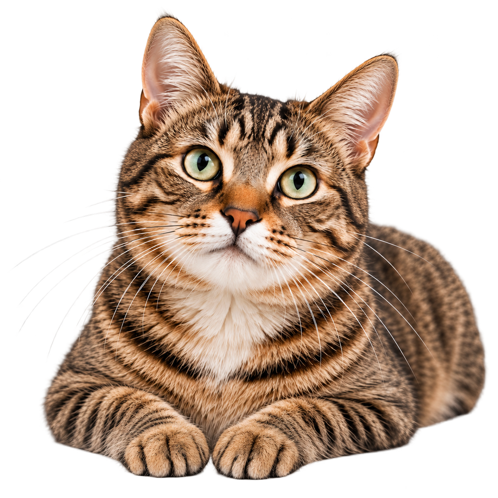

Riesgos
Toda cirugía conlleva riesgos, pero en Cat Home trabajamos para que sean mínimos.
Anestesia segura y monitoreada
Utilizamos anestesia segura y monitoreo constante durante todo el procedimiento.
Equipos especializados
Contamos con equipos modernos y adecuados para cada procedimiento.
Personal capacitado
Nuestro equipo veterinario está altamente capacitado y en constante actualización.
Protocolos de higiene estrictos
Seguimos estrictos protocolos de higiene y desinfección para minimizar riesgos.
Monitoreo constante
Monitoreamos a tu gato antes, durante y después del procedimiento para asegurar una recuperación adecuada.


La seguridad de tu gato es nuestra prioridad.